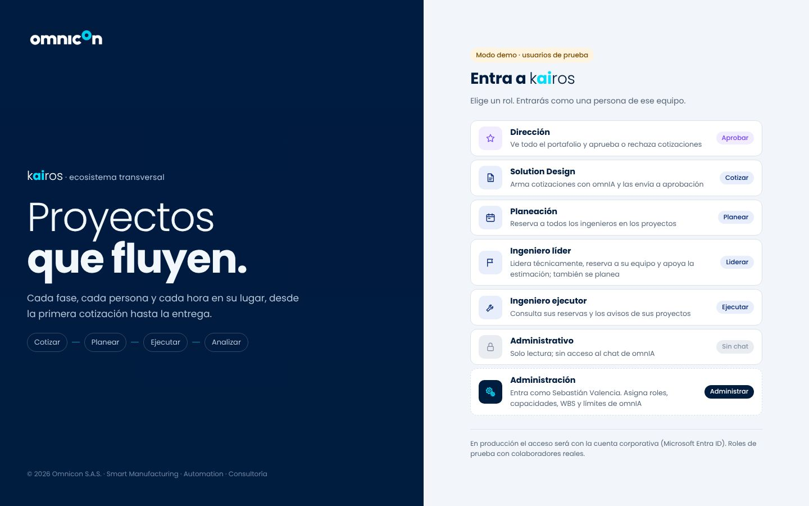

Demo
kairos ecosistema transversal
Proyectos que fluyen. Cada fase, cada persona y cada hora en su lugar, desde la primera cotización hasta la entrega, con roles para dirección, diseño de soluciones, planeación e ingeniería.
- Cotizar
- Planear
- Ejecutar
- Analizar
